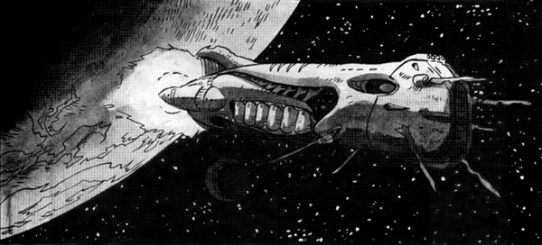

The following material is from
THE THIRD INVID
WAR, a fan supplement by
Dave Deitrich and
Chris
Meadows. Please feel free to use, copy, and distribute
it as you see fit. All we ask is that you give proper credit to us and do not
claim that it is your own work. Comments and suggestions are welcome.
REF WARRIOR-CLASS DESTROYERS
Based on an original starship design by BILL SPANGLER, TIM ELDRED and
FRED PERRY
Published in Eternity Comics' Robotech Invid War comic
books.
RPG Stats by DAVE DEITRICH
(deitrich@mcs.net)

BACKGROUND
The Warrior-class Destroyer was designed and built by the
Robotech Expeditionary Force (REF) in 2024, during the early part of the
Sentinels War (First Invid War). Along with the Exeter-class Escorts,
the Warriors were designed to defend REF bases as well as escort larger
capital ships to protect against Invid strike forces. The destroyers were
also designed for reconnaissance, and contain both powerful sensor systems and
subspace transmitters/receivers for their size. The Warrior class has a
definite Zentraedi look and feel to it, mostly due to the fact that a large
number of its systems were taken directly from the Zentraedi Salan
scout ship design. The use of Zentraedi technology greatly reduced the
development time necessary for the destroyers, as well as lowering the cost of
their manufacture since the Valivarre shipyards were already geared for
manufacturing these systems and did not require extensive retooling.
The armament of the Warrior-class destroyer is impressive for its size. The
main weaponry consists of two forward-mounted main laser cannons along with 8
concealed particle beam cannons. The destroyer also has six heavy missile
launchers (4 forward, 2 reverse) capable of launching nuclear or reflex
weaponry. As with all REF starships designed following the near-defeat at the
battle of Tirol, the Warrior also has 20 retractable laser turrets and 4
retractable medium-range missile launchers for anti-mecha defense. In
addition, the destroyer's modest landing bay can support up to 30 mecha of
various types, along with 3 shuttles and other support craft. The Warrior
also contains a pinpoint barrier system, as well as its own independent fold
drive.
Although not as glamorous as other REF starships, the Warriors played an
important part during the First Invid War providing valuable reconnaissance
and defending REF bases against counterattacks as the Sentinels recaptured
local group planets from the Regent's forces. During the final push to Optera
near the end of the war many Warriors took part in border raids to disrupt
Invid supply lines as well as diversionary skirmishes to keep Invid forces
away from the main fleet. Many Warriors were destroyed during the final
battles of the war, though their sacrifices led to the Sentinels' triumph and
the death of the Invid Regent in 2032.
The Warrior-class destroyers were extremely popular with REF Zentraedi forces
and even some important non-Zentraedi REF commanders. Following the end of
the Sentinels War Colonel Jonathan Wolff took command of the RSS
Wolfpack and made it the flagship of the REF Venus Attack Group, which
was the first and only time a starship smaller than a cruiser has been made
flagship of an entire REF fleet. However, the Wolfpack was hijacked by
Dana Sterling and the 15th ATAC shortly after Wolff's arrival at Earth
and returned to Tirol with refugees from the Second Robotech War. Dana
Sterling was court-martialed for her actions and the Wolfpack was
reassigned to the REF Mercury Defense Group to protect Tirol. In 2042 the
Wolfpack was assigned to the Icarus Reconnaissance Mission and returned
to the Sol system once again. Unfortunately the ship was destroyed shortly
after arrival by the Invid Space Hive ring
while trying to regain contact with REF Moon Base Copernicus.
The Warrior class served until 2057 when the class was retired in favor of
newer RGF starship designs. Most of the destroyers that survived the Invid
Wars were scrapped and recycled, although a few have been preserved. The
RSS Archer is the most notable surviving example of this class, and is
currently on display in the RGF Naval Museum orbiting Tirol. Warriors were
originally manufactured at the Fantoma Orbiting Shipyards, though later they
were also manufactured under contract at the Karbarran Space Works. At their
height Warriors were manufactured at a rate of 15-20 per year.
RPG STATS
Government: Robotech Expeditionary Force, later Sentinels Alliance
Ship Type: Super Dimensional (Space Fold) Reconnaissance Destroyer
Class: Warrior SFD-3000
Manufacturer: Tirol (Fantoma Orbiting Shipyard), Karbarra (Karbarran
Space Works).
- Crew: 400 total
- Officers: 25
- Main Crew: 235
- Flight Crew: 60
- Mecha Pilots: 30
- Troops: 50
- Notable Ships of Class:
-
| SFD-3064 Wolfpack |
launched 2028, made flagship of REF Venus Attack Group in 2033, hijacked
by Dana Sterling same year, assigned to REF Icarus Reconnaissance Mission in
2042, destroyed by Invid Space Hive same
year |
| SFD-3087 Archer |
launched 2030, survived all three Invid wars, retired in 2057, moored at
RGF Naval Museum orbiting Tirol in 2061 |
MDC BY LOCATION:
(1) Main Body 8,500
(2) Forward Bridge 750
(3) Flight Deck (bottom) 1,200
(4) Main Engines (3) 2,000 each
(4) Auxiliary Engines (2) 800 each
Guidance Thrusters (24) 200 each
Main Lasers (2) 300 each
Particle Beam Cannons (8) 75 each
Missile Launcher Tubes (6) 150 each
Retractable Laser Turrets (20) 100 each
Retractable Missile Launchers (8) 100 each
(5) Pin Point Barriers (4) 5,000 each
(6) Forward Antennae (6) 50 each
(6) Main Antennae (2) 200 each
Small Airlocks/Access Hatches (20) 250 each
Main Airlocks (4) 500 each
Outer Hull (per 40ft area) 200
Interior walls (per 20ft area) 20
NOTES:
- Depleting the MDC of the main body will eliminate the destroyer. All
internal systems will shut down, including life support and internal
gravity. In addition, there is a 40% chance that the power systems will
overload and the destroyer will explode, doing 1D6x1,000 M.D. to
everything in a 2,000 ft (610 m) radius. Regardless of whether it
explodes or not, the ship itself will be an unsalvageable floating
wreck.
- Destroying the forward bridge will instantly kill anyone on the command
deck. However, there is an auxiliary bridge near the center of the ship
that the surviving crew can take command from. If the main bridge is
lost the ship will be operating at -2 initiative due to having to rely
on backup systems.
- Destroying the flight decks will greatly impair the destroyer's ability to
deploy and recover mecha. Under normal circumstances the destroyer can
launch or recover 4 mecha per turn. For every 300 points of damage the
flight deck takes reduce this number by 1. If the flight deck reaches 0
MDC then it is destroyed; no mecha can be launched or recovered,
40+(1D6x10)% of the flight crew will be killed, and any mecha that have
already been launched will need to find another place to land.
- Depleting the MDC of the main engines will force the ship to rely on its
secondary engines. Depleting the MDC of the main engines AND secondary
engines will leave the ship adrift in space. If in an atmosphere, the
ship will crash (destruction of the main engines will render the
antigravity system useless due to loss of power).
- The Pinpoint Barriers regenerate at a rate of 1,250 MD per second (2,500
MD per melee round). If destroyed, a barrier will completely regenerate
within four seconds (2 melee rounds). See the Pinpoint
Barrier System entry for details.
- Destruction of the 6 forward antennae will knock out most of the
destroyer's sensor systems. Main radar will be limited to only 20 miles
(32 km), and subspace sensors will be offline. Destruction of the 2 main
antennae will knock out hyperspace communications.
SPEEDS:
- Speed (sublight): 0.20 speed of light (32,000 miles/51,500 km per
second)
Speed (Auxiliary Drives): Mach 14
Space Fold: Range Unlimited (1 light year every 6 minutes).
Planet bound:
- Has vertical take off and landing (VTOL) capability. Can reach speeds of
up to Mach 8 in an upper planetary atmosphere, but not designed for extended
flight or maneuvering. Can also travel underwater at up to 100mph (160 kmph)
if absolutely necessary.
- Maximum Range: Unlimited (powered by a protoculture reactor with an
estimated life span of 20 years)
STATISTICAL DATA:
Length: 750 ft (250 m)
Width: 180 ft (55 m)
Height: 165 ft (50 m
Weight: 40,000 tons (standard)
Fold System:
Robotech Research Group (RRG)-modified Shik-Telnekulla fold system cluster
Sublight Drive:
Workl-Quatafilla macro nozzle cluster (RRG-modified)
Gravity Control System:
Geteulmaqulla-Zollia internal gravity control system (RRG-modified)
Auxiliary Engine:
REF Naval Engineering Class IX mass-conservation thrust system
Radar System:
RRG Type XIV Hyperspace Sensor Cluster
WEAPON SYSTEMS:
- MAIN LASER CANNONS (2): The main anti-starship weapons of the
Warrior-class Destroyers are two zentraedi-style heavy laser
cannons mounted below and to the rear on each side of the main bridge.
These lasers are fixed forward and can only fire at targets directly in
front of the destroyer. The lasers can be fired individually or at
the same time; most commanders alternate between the two cannons to
compensate for the lasers' recharge delay.
- PRIMARY PURPOSE: Anti-Warship
- SECONDARY PURPOSE: Heavy Assault
- RANGE: 500 miles (805 km) in an atmosphere,
1000 miles (1609 km) in space
- DAMAGE: 4D6x100 M.D. per blast
- RATE OF FIRE: Each laser can fire once every other round
- PAYLOAD: Unlimited
- PARTICLE BEAM CANNONS (8): As a backup to the main laser cannons,
The Warrior destroyers are equipped with 8 heavy particle beam
cannons mounted in concealed hardpoints on the bow of the ship. These
cannons have a limited range of motion; they can be adjusted 30 degrees
to the left, right, above or below the centerline of the ship. The
cannons are similar to the PBC-12 cannons used on the Mk VII Excalibur
destroids, but have a longer range and greater power.
- PRIMARY PURPOSE: Anti-Warship
- SECONDARY PURPOSE: Heavy Assault
- RANGE: 100 miles (161 km) in an atmosphere,
200 miles (322 km) in space
- DAMAGE: 5D10+50 M.D. per blast
- RATE OF FIRE: Each PBC can fire once per round
- PAYLOAD: Unlimited
- HEAVY MISSILE LAUNCHERS (6): To further augment their anti-warship
firepower, the Warrior destroyers are equipped with 6 torpedo-like
missile tubes. Four of these tubes are aimed forward while two are
mounted to the rear. The launchers contain long-range nuclear missiles
and are intended for use heavy combat only.
- PRIMARY PURPOSE: Heavy Assault
- SECONDARY PURPOSE: Anti-Warship
- RANGE: 2,000 miles (3,216 km)
- SPEED: Mach 2+ (1,340 mph/2,140 kmph) in an atmosphere.
- DAMAGE: 6D6x100 M.D.
- BLAST RADIUS: 2,000 feet (610 m)
- RATE OF FIRE: Each launcher tube holds one missile and must be
reloaded after firing. Reloading a launcher tube takes 30 seconds (2
melee rounds). If loaded, all 6 tubes can fire at once for a volley
of 6 nuclear missiles (!).
- PAYLOAD: A typical destroyer carries 30 missiles in
storage that can be readied for firing in about 30 minutes.
Additional missiles can be carried if deemed necessary, however.
- NOTE: These missiles CANNOT be used by variable fighters. Each
missile is approximately 12 ft (3.6 m) long, about twice the size of
a VR-152 Battler II cyclone.
- RETRACTABLE LASER TURRETS (20): The destroyer has 20 retractable
laser turrets mounted at various strategic places along the hull. These
short-range lasers are intended primarily for anti-mecha defense, but can
do moderate damage against enemy spacecraft that get too close. When not
in use gun turrets are concealed within the hull underneath a sliding
hatch. At most 10 lasers can be brought to bear on a single target.
- PRIMARY PURPOSE: Defense
- SECONDARY PURPOSE: Anti-Mecha
- RANGE: 30 miles (48.3 km) in an atmosphere,
60 miles (96.6 km) in space
- DAMAGE: 1D6x20 M.D. each. Several lasers can be directed to
fire in volleys of 3 or more. A volley of 3 beams does 3D6x20 M.D., a
volley of 6 beams does 6D6x20 M.D., and so on. A full volley of 10
beams aimed at a single target does 1D6x200 M.D. (!) if it hits.
- RATE OF FIRE: Each laser can fire once per melee, and can be
combined in any volley combination of 3 or more lasers, up to 10
lasers. Volleys can be directed at different targets.
- PAYLOAD: Unlimited.
- NOTE: The lasers can be set on automatic during combat, during
which time they have a +2 to strike due to their advanced tracking
systems. The lasers tracking systems will target incoming missiles
first and attacking mecha/aircraft second.
- RETRACTABLE MEDIUM MISSILE LAUNCHERS (4): In addition to the heavy
missile launchers, the Warrior destroyers are armed with four
medium range missile launchers which are also intended for anti-mecha
defense. Each launcher contains 10 missile tubes allowing volleys of up
to 10 missiles to be fired at a single target per launcher. Once
depleted, the missile launchers are reloaded by an automated loading
system that takes 15 seconds (one melee round) to reload all 10
missiles. Armor-piercing smart missiles are usually used to avoid chances
of friendly fighters being shot down by the missiles.
- PRIMARY PURPOSE: Anti-Aircraft
- SECONDARY PURPOSE: Anti-Warship
- MISSILE TYPES: Any type of REF Medium Range Missile can be
used. Smart missiles are commonly used to avoid hitting friendly
aircraft.
- RANGE: Varies, typically 60 miles (80.4 km).
- SPEED: Varies, typically 1600mph (2571kmph) in an atmosphere.
- DAMAGE: Varies, typically 2D4x10 M.D.
- BLAST RADIUS: Varies, typically 15 feet.
- RATE OF FIRE: Volleys of 2, 4, 6, 8, or 10 missiles per
launcher.
- PAYLOAD: Each launcher holds 10 missiles. Once the missiles
are expended the launcher is reloaded within 1 round via an automated
system. The reload system holds 50 missiles per launcher.
- DS-1 PINPOINT BARRIER DEFENSE SYSTEM: Originally
developed by Dr. Emil Lang onboard the SDF-1 during the First Robotech
War, the Pinpoint Barrier System is a standard defense system on board
most REF starships, including the Warrior destroyers. The system
generates four small disc-shaped force fields that can be positioned
anywhere along the ship to deflect missiles, energy beams or projectiles.
Each pinpoint barrier is about 200 ft (61 m) in length and can absorb up
to 5,000 MD in damage, which then regenerates within five seconds (3 melee
attacks). The barriers can also be layered on top of each other to
generate a field which provides 20,000 MDC and can even deflect heavy
particle beams (usually).
The four barriers are controlled by operators in the command tower of the
carrier. These operators are instructed to defend (1) the forward
bridge, (2) main engines, (3) main weapon systems, and (4) the flight
deck, in that order. The operators primarily concentrate on defending
the ship against larger spacecraft and leave defense against mecha
attacking the destroyer to the Veritechs and retractible weapon systems.
- PRIMARY PURPOSE: Defense (the pinpoint barrier system cannot be
used as a weapon)
- RANGE: Up to 100 feet (30.5 m) from the surface of the vessel.
- DAMAGE CAPACITY: Can sustain up to 5,000 MD per round.
Regenerates at a rate of 2,500 MD per melee round.
- RADIUS: 200 ft (61 m)
- DEFENSIVE MOVEMENT: Can move from one end of the destroyer to
the other in less than a single round. Trained operators can attempt
to block attacks up to 8 times per melee (counts as a parry) and are
at +7 to block. Untrained characters can parry up to their number of
hand-to-hand attacks with their normal parry bonuses only.
- PAYLOAD: Nearly inexhaustible. Will work as long as system is
functional (see below) and engines are intact. If main engines are
destroyed, the barrier will loose power and not function.
- NOTE: If all four barriers are grouped in a single spot they
can deflect a heavy particle beam attack, such as the one generated
by Zentraedi or Robotech Master warships. However, the beam will
completely destroy all four barriers and put incredible strain on the
pinpoint barrier system to the point where it may short out. After
deflecting an energy beam, roll percentile dice on the table below to
determine additional effects/damage.
- 01-15: Lucked out, system will be operational in 1D6 hours.
- 16-30: Minor damage, system will require 4D6 hours to
repair.
- 31-45: Major damage, system will require 2D6x10 hours to
repair (yes, DAYS of work).
- 46-60: Completely destroyed! System can be rebuilt, but
will require new parts and 2D6 DAYS of work to
replace.
- 61-75: Major damage, system will require 2D6x10 hours to
repair.
- 76-90: Minor damage, system will require 4D6 hours to
repair.
- 91-95: Lucked out, system will be operational in 1D6 hours.
- 96-00: It's a miracle! Trivial damage only, system will
be operational again in only 4D6 melee rounds!
SYSTEMS OF NOTE:
- ANTIGRAVITY PROPULSION SYSTEM: The Warrior destroyers are
equipped with an anti-gravity propulsion system used for planetary landings
and liftoffs. The system is good for vertical ascent/descent only and can
lift the ship at speeds of up to 1,320 feet (400 m) per minute. The system
will function so long as the main engines can supply energy to it.
- HYPERSPACE COMMUNICATIONS: The destroyer is equipped with a
hyperspace communications relay which allows faster-than-light communication
between the ships and other vessels or planetary bases. Hyperspace
communications are still not instantaneous, however. Audio/video
communication travels through hyperspace at a rate of about 5 seconds per
light year, so messages communicated over vast distances can still take days,
weeks, or months to arrive.
- LIFE SUPPORT SYSTEMS: The Warrior destroyers have sufficient life
support to provide breathable air and comfortable temperatures for 500
people for up to 15 years (air is recycled). In an emergency the life support
system can support up to 800 people at one time, though living conditions
onboard will get extremely cramped at that point. The carrier also holds
sufficient food and water to support 400 people for up to 6 months.
- LONG-RANGE LASER/SATELLITE RELAY COMMUNICATIONS: The impressive
communications array of the destroyer can communicate with up to 500
craft simultaneously at ranges of up to 900 miles (1,440 km). This range can
be boosted indefinitely by using satellites or other spacecraft to relay
communications.
- LONG-RANGE RADAR: The radar array of the Warrior destroyers can
track and identify up to 1,000 craft simultaneously. The radar system has a
2,000 mile/3,200 km range.
- SPACE FOLD SYSTEM: For FTL propulsion, the destroyer is
equipped with a modified version of a Zentraedi fold drive, capable of
propelling the ship through hyperspace at speeds up to 3.28x10^10 mps
(5.25x10^10 kmps), or 1 light year per 6 minutes. However, unlike larger
capital ships the Warrior CANNOT transport other ships with it when it
folds. The range of the fold drive is theoretically unlimited except by the
life expectancy of the spacecraft.
- SUBLIGHT ENGINES: As a backup to the Fold System, the destroyer
is equipped with sublight engines that can propel the ship at speeds up to
0.20 speed of light (32,000 miles/51,500 km per second) in space. Note that
these engines are mainly intended for rapid movement inside a planetary system
and are not suited for long voyages between star systems. In a planetary
atmosphere the carrier is limited to speeds of Mach 3 at low altitudes or Mach
8 at high altitudes due to hull stress.
- SUBSPACE MASS SENSORS: The Warrior destroyers are equipped
with subspace sensors which are based on the same principles as the
hyperspace communications array. These sensors can essentially instantly
detect mass readings and movement of objects up to 1 AU (93 million miles)
distant from the carrier, and the readings are used both for early warning and
for navigation when travelling at sublight speeds. Readings taken with the
subspace sensors are not very detailed (-25% penalty when trying to identify a
detected object) and cannot detect objects of less than 60,000 kg (this
includes most variable fighters).
MECHA COMPLEMENT:
The landing bay can hold and support a grand total of 30 veritechs/destroids
of any type, as long as the mecha are smaller than 50 ft (15.2 m) and weigh
less than 40 tons each. The actual complement of mecha will vary; A Warrior
destroyer assigned to escort or long-range reconnaissance will usually have 12
Alphas (VAF-6 or VAF-8), 12 Betas (VBF-1 or VBF-2), and 6 Destroids (Gladiator, Excalibur, or
Raidar X) aboard, while a destroyer assigned to support an invasion may have 6
Alphas and 24 Destroids. Other combinations are possible. Also included are
50 Cyclones of various types (for use by the
troops on board), 6 TCH-4 Tractor-Haulers, 12 ML-3 Forklifts, and 3 REF
Personnel Shuttles.